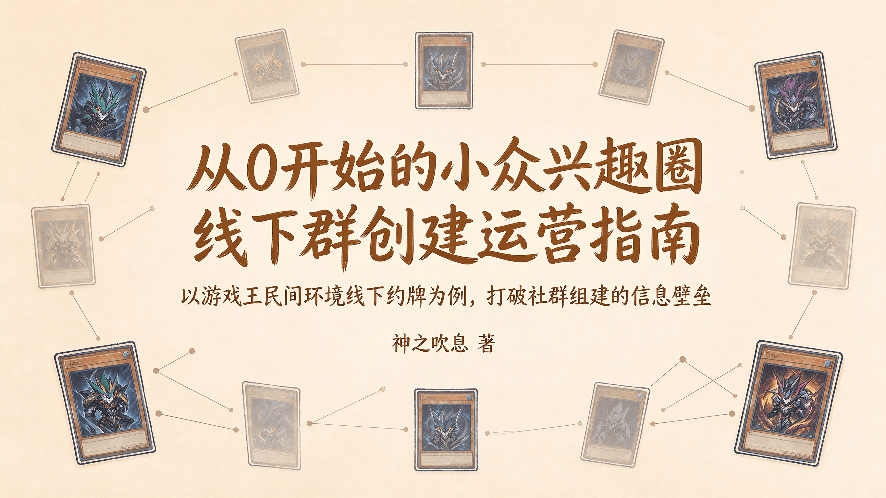

本文/视频参照CC BY（署名）协议开放转载，敬请保留原链接与作者信息噢~感谢传播！支持知识开放、协作与共享。
作者：神之吹息
版本：V1（初版）
首次发表日期：2026年10月10日
最后修改日期：2026年10月8日
本文面向想要从零开始组织线下游戏王民间环境活动、但不确定从何入手的牌佬。
如果你正在阅读这篇文章，大概率属于以下几种情况之一：
你在线上群里找到了同好，但发现同城牌佬寥寥无几，更不知道如何把他们聚到一起。
你所在的城市明明有不少牌佬，却始终没有一个稳定的民间环境线下约牌组织。
你加入过一些本地群，但感觉氛围被固定的小圈子主导，新人很难融入，或者被各种“人情”绑住。
你只是想在自己所在的城市，找几个同好，安安静静地打几局民间环境的牌。
如果你有以上任何一种情况，这篇文章就是为你写的。
另外，本文虽以游戏王民间环境为例，但其中的思路，对其他小众兴趣领域的线下组织也有一定参考价值。
欢迎各位读者姥爷看完后理性讨论，也欢迎I人读者姥爷私信投稿。私信、私聊投稿视为同意本人在展示投稿内容的同时展示头像及ID等信息实名收录到本文附加部分或新开设的包含“投稿-回应”类型内容的文章、视频。如有深度理解，也欢迎撰写长文公开对话、讨论。
以下内容中提到的各种做法，都是参考建议。你的城市规模、已有的牌佬基础、可用的场地资源、你自己的时间和精力，都会影响具体怎么操作。
你可以根据实际情况来调整，有些步骤可能不需要，有些步骤可能需要做得更细。
本文不会暗示“组织线下活动是唯一正确的玩法”，也不会假设“不组织的人就不够热爱这个环境”。有些牌佬满足于线上打牌，有些牌佬觉得只跟极少数朋友决斗也很开心，这都完全没有问题。
本文不负责说服你“应该建群”，只是为那些已经决定尝试的人提供一个可以参照的起点。
现行的民间环境各有各的线上群，但线下活动往往集中在少数城市、少数人手中。
部分牌佬遇到的情况是：找不到同城局；或者找到了，但发现圈子封闭、人情绑定严重，参与门槛不在牌技上，而在“你是谁的人”。这种信息差和圈子壁垒，让一些本可以打牌的人，最终放弃了线下。
本文试图打破这种信息壁垒。从“如何找到同城牌佬”开始，到“第一次约牌怎么搞”，到“如何让群不冷场”，到“如何处理人际关系”，一步步拆解从零搭建线下打牌群的全流程。目标是降低组局门槛，让普通牌佬也能自主搭建自由、纯粹的线下决斗环境，推动民间环境生态的去中心化与普惠化。
比起某个城市只有极少数几个线下群“垄断”，如果能多一些线下群“自由竞争”互相提升群员的决斗体验，能让牌佬们多一些自由选择，既可以选择在少数线下群常驻，也可以雨露均沾哪里有活动就去哪——正如不少牌佬觉得比赛上位统计饼图中卡组类型更多一些、更百花齐放的民间环境更有可玩性一般。这样线下决斗的氛围和整体发展前景也会更好，不是吗？
当然，如果你现在玩得开心，不需要改变任何事。本文只是告诉你，如果你想做点不一样的，可以从哪里开始。
本文尾部附有一节关于城市人际环境的提醒（选读），不是教你如何对抗谁，而是让你知道：如果你遇到了类似的情况，那并不是你的问题。
适用群体
前期调查
常用软件选择
轻量试运行
为新血作准备
分享人生经验
进阶方向
特别篇：县城熟人社会
附：城市陌生人人际环境提醒（选读）
结语：从约牌开始，走到哪算哪
你属于哪种情况？本文不要求你从头读到尾。不同起点的读者，可以直接跳到对应的章节。
你还没找到同城牌友，也不确定所在城市有没有人玩民间环境。
建议阅读重点：
前期调查：怎么找同城牌佬。
常用软件选择：建群用什么工具。
轻量试运行：第一次约牌怎么搞。
先找到一两个人，约一次牌。不用一开始就准备很多东西。
你们聊过卡组，说过“有机会线下打牌”，但从来没约成。大家都在等别人先开口。
建议阅读重点：
轻量试运行：怎么把“线上认识”变成“线下见面”，第一次约牌怎么定时间、选场地。
为新血作准备：想长期玩，可以准备公共预组。
你已经有了最宝贵的事物：几个有意愿的同城牌佬。你只需要迈出第一步。
你们有两三个人会偶尔约牌，但每次都要临时找人、临时定时间。想过建群，又担心建了没人说话。
建议阅读重点：
常用软件选择：QQ群和微信群怎么选。
轻量试运行：怎么从随机约牌过渡到固定周常。
分享人生经验：长期维持群活跃度的方法。
你们已经过了“从零开始”的阶段。现在需要的是一个能持续运转的小框架。
群内长期没人说话，约牌也约不起来。只有你在推动，其他人都在观望。
建议阅读重点：
轻量试运行：怎么重新激活一个冷场的群。
分享人生经验：冷场、无人说话时的处理思路，出现不同意见或小圈子倾向时怎么办。
群冷场不是你的错，也不是群没有价值。很多时候只是缺一个合适的启动方式。
此外，如果你属于以下情况，本文同样适用：
被简中“经典时光”等官方新品吸引，想从经典环境入门。
手里有几套卡组，想带新人入坑，推广自己喜欢的经典民间环境。
加入过本地群，但圈子封闭、人情绑定严重，想搭建更平等自由的打牌环境。
不一定想建大群，但想试试组织小型的约牌或娱乐赛。
本文不适用于仅满足于线上打牌、对线下组织毫无兴趣的牌佬。
本文不要求你已经有卡组，不要求你技术好，不要求你已经有圈子。你只需要有一个想法：“我想在自己所在的城市，找几个人，一起打打民间环境的牌”，然后愿意迈出第一步。
如果觉得线下没人组织，那你可以成为那个组织的人。
在决定建群之前，先花一点时间了解本地是否已经有人在做类似的事，以及同城牌佬大概有多少、在哪里。这一步不需要很复杂，但能帮你少走弯路。
这是最直接的方式。
在408、506、2011探索者环境等民间环境线上群中，用“城市名”搜索群成员列表，或者留意群昵称里带地名的群友（需要群主和管理引导群员修改群昵称）。如果群昵称没有地域前缀，可以在群内直接发一条“寻找XX城市牌友”的消息。
找到同城牌佬后，可以私聊问一句：“你在XX城市？有没有兴趣线下约牌？”不要一上来就提“建群”，用“约牌”做切入，对方压力更小。
如果对方没兴趣或没回复，不要追问，继续找下一个。
原则：明确身份，不绑定，不推销。只是约牌，不是拉人。
如果线上群里找不到足够的人，可以到B站、小红书、贴吧、抖音、快手、NGA论坛、旅法师营地等平台发内容。
内容方向：卡组分享、决斗录像、环境科普，或者简单一句“XX城市找民间环境牌友”等。
关键操作：标题、标签、简介里带上城市名。比如“广州408环境约牌”“茂名506环境找同好”“乌鲁木齐2011探索者环境一起来玩”。
观察反馈：有没有同城牌佬评论、私信？如果有，主动聊几句，确认对方是否真的想线下打牌。
大方得体：玩游戏王民间环境就是一个很常规的爱好，与打球、钓鱼、爬山、骑行、阅读、观影等没有本质的区别，宣传和交流时大大方方即可，无需提前害怕普遍的公众会有什么很站得住脚的负面看法。
核心逻辑：内容本身就是筛选器。能被你的内容吸引来的，往往是对环境有真实兴趣的人，比硬拉人靠谱得多。
在约第一次牌之前，先摸清本地有哪些卡店、桌游吧，或者适合打牌的公共场所（如经典的麦当劳、肯德基等快餐店，能容忍打牌的奶茶店、咖啡店等）。
看看哪些店有场地，收费如何、环境是否安静、交通是否方便。
顺便了解一下本地已有的游戏王圈子：是官方OCG、经典时光环境为主，还是也有民间环境牌佬？氛围如何？
不需要很详细，做到心里有数就行。
没有调查，就没有发言权。你需要获取足够的情报，才能有助于决定下一步。
以上三步做完，你大概能判断出：本地有没有潜在牌佬、大概有多少、他们愿不愿意线下打牌。
如果只有一两个人有意向，可以先约一次牌，约完之后再判断要不要建群。有时候不建群，大家反而更轻松。
如果一个人都找不到，也不用灰心。可以在公域平台继续发内容，慢慢积累。
或者换个思路：先去附近城市的线下活动看看（比如有些佛山牌佬偶尔会到广州来约牌。你可以留意附近城市的民间环境群，看看有没有类似的跨城约牌），学习经验，再回来做。
先调查，再行动。 不要因为一时冲动就建群，建了之后没人说话，反而打击信心。
人找得差不多了，接下来就是建群。QQ群和微信群，选哪个？
先说结论：QQ群当主阵地，微信群当辅助。
QQ群的优势：
群文件能长期存卡表、规则、战报，新人进群自己翻。
群公告可以改，历史记录也能保留。
管理功能多，禁言、投票、作业都能用。
适合做“主群”，沉淀资料、发正式通知。
微信群的局限：
文件会过期，新成员看不到以前的聊天。
管理功能少，基本靠手动。
适合闲聊，不适合存东西。
所以建议：
用QQ群当主群，放资料、发通知、组织比赛。
如果大家平时更习惯微信，可以再建个小微信群，专门用来临时约牌、当天联络。但资料和正事还是回QQ群。
总结：QQ群负责沉淀，微信群负责聊天。
群建好了，别急着拉一堆人。先把“地基”打好：
群名要清晰
建议格式：【城市名】游戏王【环境名】线下约牌群
比如：【广州】游戏王408环境线下约牌群
让人一眼就知道：这是哪个城市、玩什么环境、是干嘛的。
群公告写三件事
本群是干嘛的：比如“广州408环境线下约牌群”。
简单群规：文明交流、尊重不同玩法、禁止人身攻击。
鼓励约牌：说一句“欢迎大家主动约牌，别光潜水”。
设个简单的入群问题（可选）
比如“你玩什么环境？”防止广告号乱入。群昵称也可以建议改成“城市（或者区县等）-昵称”，方便认人。
先拉确认有意向的人
建群后，先把之前确认有意向的那几个人拉进来。不用一下拉太多人，先把三五个核心牌佬聚起来。人少没关系，能约起来一次，就有第二次。
群主别当甩手掌柜
刚建群，没人说话很正常。你可以先发几句，比如“这周末有没有人想打牌？”“大家平时什么时间方便？”你主动一点，别人才敢开口。
总结：QQ群当主阵地，微信群当辅助；群名清晰，公告写清楚，群主先主动。地基打好了，接下来就是第一次约牌。
群建好了，人也拉了几个，接下来就是最关键的一步：把人约出来。
这一部分讲的是从“有群”到“有人来”的过程。第一次约牌怎么搞、约不到人怎么办、怎么从偶尔约变成固定约，一步步来，别想太复杂。
你不需要先成为一个“懂行的人”才能开始。很多事是做了才会，不是会了才做。第一次约牌，哪怕只是说一句“这周末有空吗”，就已经是在学了。
也不需要一次做完所有步骤。你只需要先做一件事：找到一个人，约一次牌。 其他的，等这一步做完了再说。
第一次约牌，目的只有一个：让大家见个面，打上几局，觉得“下次还可以再来”。
人数：2人就能打，3-4人最佳。先从之前确认有意向的那一两个人约起。不用等“人多了再搞”，人少也能打。
场地：优先选免费或低消费的公共场所，比如经典的麦当劳、肯德基，奶茶店（确认不赶人、不扰民）。也可以去本地卡店，提前问清楚有没有低消、要不要预约，营业时间如何等。如果信得过，牌友家里也行，注意安全。
时间：周末下午最合适。大家不用赶着上班，打完还能一起吃个饭。
实践：在群里发一句“这周末有没有人打牌？地点XX，时间XX”，像朋友约饭一样随意。活动结束后发几张照片，配一句“今天打得很爽，下次继续”。这不是炫耀，是给没来的人一个信号：这个群真的会约牌。
进阶：日后条件允许，还能拍摄简单的日常约牌决斗录像（只拍桌面部分），辅以简单的剪辑（只需剪去前后多余内容、适当加速、选些不算突兀的背景音乐等），不会剪辑也可以直接发原片，上传到B站、小红书、抖音、快手等视频平台，让更多的潜在牌佬看见。
这是最可能出现的情况。群里一片安静，不代表你失败了，可能只是大家还不熟、时间不合适，或者有人在观望。
别在群里反复刷屏，刷多了别人反而不敢说话。
一对一私聊，找之前聊过的人单独问：“这周末有空吗？就我们俩先打打也行。”私聊比群聊有效得多。
降低门槛，2个人就能打，打两局也行。
如果实在没人，可以先暂停，继续在公域发内容，或去附近城市的线下活动看看。等有新意向牌佬出现，再试一次。
约起来一次之后，关键是能不能约第二次、第三次。
固定时间地点。比如每周六/日下午，某个多次去的合适场地，形成习惯。大家到点了就知道“该打牌了”，不用每次重新问。
鼓励群友自己发起。筛选出3-5个稳定活跃的核心牌佬，不要每次都你当发起人。有人问“周末有人吗？”，你就积极回应，让他觉得“我也能组织”。
如果约牌已经稳定了几次，有几位牌友常来，就可以试试搞个小型的内部娱乐赛。人数不用多，4-8人就够；规则简单点，瑞士轮打几轮；奖品可以是一包卡、一杯奶茶，重点是让大家有“正式打一次”的感觉。
办小比赛的目的，是让参与者有仪式感和归属感，也为以后办更大的活动积累经验。
可以参考一些已有的比赛流程SOP（报名、瑞士轮排表、战报发表等），不用太严格，灵活调整就行。
一种游戏王赛事SOP：从筹备到战报的全流程标准作业 一种游戏王赛事改良瑞士轮赛制：分组瑞士轮实战指南 比赛举办公告参考模板 比赛报名表问题选项参考模板 比赛战绩表问题选项参考模板 比赛战报参考模板 一种瑞士轮计分的细化方法：让每一分都掷地有声
内部比赛也稳定之后，可以试试办一场稍微正式一点的公开赛。
总结：从有群到有人来，关键就一件事：先约起来。约不到人，就私聊、换时间、多试几次；约成了，就固定时间、固定场地，慢慢形成习惯；稳定了，就试试搞个小比赛。一步一步来，不用急。
群稳定了，有人常来了，接下来可以考虑一件事：让新人也能轻松加入。
很多对民间环境感兴趣的人，不是不想玩，而是不知道怎么组卡。你让他自己收一套，他可能连从哪里开始都不知道。所以，准备几套公共预组，是降低新人门槛最直接的办法。
就是几套现成的卡组，放在群里，谁想玩谁拿去用。
降低门槛：新人来了，不用收卡，直接拿一套就能打。资深牌佬想换环境试试，也可以借来玩。
统一强度：预组之间强度相近，避免新人被资深牌佬碾压。
吸引观望者：有人观望，让他先试一把，比说一百句都管用。
核心目的：把“想玩”和“能玩”之间的门槛降到最低。
把卡图打印在A4纸上，剪下来，套上卡套，就能用。或者到淘宝搜索印制厚卡的服务。
适合学生党，或者作为公用试玩卡组。
可以使用中文卡图，规避外语的“语言障碍”。
缺点：手感差一点，但打牌完全没问题。
很多经典卡因为复刻，价格很便宜。一套入门级实卡卡组，100-200元甚至更低就能搞定。
可以请有经验的资深牌佬帮忙组，选操作简单、强度相近的卡组。
可参考408环境的开源分级预组（入门、比赛），直接抄作业。
建议：先做2-3套打印版试水，确认有人用，再升级实卡版。
选预组卡组，记住四个原则：
匹配核心环境：如果你们主要玩408环境，就选408的卡组，别整别的。
操作简单：新手能快速上手的，别搞复杂combo。
造价低廉：卡源充足、容易收，补卡不心疼。
覆盖不同风格：最好有beat down、combo、OTK等各一套，让新人选自己喜欢的。
公共预组最容易出的问题是：借了不还、弄坏了没人管、用着用着就没了。
几个简单规则：
指定专人保管：最好是你或某个靠谱的核心成员。
登记借还：简单记一下谁借了、什么时候还。
明确使用规则：比如“仅限群内活动使用”“损坏照价补”等。
接受捐赠：有人愿意捐卡、捐卡套，欢迎。慢慢扩充物资库。
不用搞得太复杂，一个本子或一个共享文档就能管。
除了卡组，这几样东西也能大幅提升新人体验：
基础配件：备用卡垫、骰子、指示物、通用卡套。
科普物料：打印版简化规则、环境禁限卡表、入门卡组玩法介绍。
这些东西花不了多少钱，但能让新人觉得“这个群挺专业、挺用心”。
总结：准备几套公共预组，让新人不用收卡就能打。先做打印版试水，再升级实卡版。门槛降下来了，新血自然就来了。
群建好了，人也约起来了。接下来是怎么让它活下去，而不只是热闹一阵子。这一部分不讲大道理，只讲一些可能遇到的问题和可以参考的应对方式。
固定周常局：比如每周六下午，固定时间、固定场地。大家到点了就知道该打牌了，不用每次重新问。
灵活临时局：群友想打牌，随时可以在群里喊一声。不要每次都你当发起人，鼓励大家自己约。
人数兜底：核心成员尽量保底到场。哪怕只有两三个人，也能打起来，不至于冷场。
如果每次都是你发起约牌，你累，群也长不大。目标是让群友自己约。
几个做法：
公开鼓励：“大家想打牌直接在群里喊就行，不用等我。”
积极回应：有人发起约牌，你第一时间回应“算我一个”。哪怕你那天没空，也可以说“这次去不了，下次一定”。
不抢风头：有人发起约牌，让他来定时间地点，你别急着替他安排。他组织了一次，下次就敢组织第二次。
给点小激励：谁约成了，你在群里公开说一句“感谢XX组织”。简单一句话，比什么都管用。
不搞技术鄙视链：新手打错了，别嘲讽。谁都是从新手过来的。
不搞小圈子：别让群变成几个熟人抱团、新人插不上话的地方。主动回应新人，拉他们一起打。
新人有人带：新人进群，安排个资深牌佬一对一答疑带练，让他快速融入。
底线要明确：禁止引战、辱骂、恶意利用规则。该说清楚就说清楚。
这是最常见的问题。群建好了，约了几次牌，然后慢慢没人说话了。
先判断原因：
是大家太忙，还是群本身没有吸引力？
是没人发起，还是发起了没人回应？
是核心牌佬流失了，还是新人没接上？
几个可以做的事：
群主先开口。不用每次都聊打牌，聊聊新卡、比赛、环境都行。你开口了，别人才敢接。
私聊核心牌佬。问问他们最近忙不忙、什么时候有空。有时候他们只是忘了，或者等你先开口。
降低活动门槛。不一定要凑齐4个人，2个人也能打。不一定要打一下午，打两局也行。
接受冷场是常态。群不会永远热闹。有时候冷一段时间，到了假期或新卡发售，又会热起来。不用因为冷场就否定自己。
群里有人吵架，或者对规则、玩法有不同意见，很正常。关键是别让争议变成分裂。你建的群，你有权维护它的氛围。
几个原则：
不强迫站队。你是群主，不是裁判。不要逼群友选边，也不要让他们觉得“不表态就是敌人”。
对事不对人。讨论规则可以，人身攻击不行。如果有人开始阴阳怪气、翻旧账，及时叫停。
给替代方案。如果有人坚持“XX规则更好”等，不要和他争，直接说“你可以自己建个分支群试试，我们不拦着”。这比辩论有效得多。
保护少数意见。有人提不同玩法，哪怕你不认同，也让他把话说完。也许他说的是错的，但让他说完，比让他闭嘴好。
常规局为主：大家玩什么环境，就约什么环境。
每月一次小型主题赛：设置小额奖励（卡包、饮品免单等），提升参与感。
鼓励群友提新玩法：有人想试什么，就让他组织一次。玩得好就保留，玩不好就算了。
每次活动后发战报、合照：发在群里，也发在本地内容平台。这不是炫耀，是让外面的人知道“这里有人在打牌”。
鼓励群友邀请朋友：靠口碑自然裂变，比硬拉人靠谱。
和本地卡店友好合作：互相引流，实现双赢。卡店有场地，你有牌佬，合作对双方都有好处。
大多数争议是意见不同，说开就好。但有一种情况不一样：有人不是来打牌的，是来搞事的。
怎么判断是“搞事”而不是“争议”？
不是对某个规则有意见，而是持续针对某个人；
不是讨论问题，而是散布无法验证的负面说法；
不是想解决问题，而是想让你难堪、让群分裂；
你回应了，他换话题；你不回应，他继续。
诸如此类。先判断：是“群内可见的搞事”，还是“外部抹黑”？
群内可见的搞事：你在群里亲眼看到、有截图、有记录。这种可以走沟通流程。
外部抹黑：你从别人那里听说，没有直接证据，对方在别处说。这种不一定要沟通，可以直接处理，或先观察。
如果确认是搞事，可以这样做：
1、留痕。 截图，保存聊天记录、操作记录。不是为了报复，是为了万一需要处理时，有依据。也为了万一对方反咬一口，你有证据。
2、不公开对线。 在群里吵架，只会让其他人看戏，让搞事者更有存在感。不跟他对骂，不陷入情绪，专注自己的事。
3、私聊确认。 如果他愿意沟通，问清楚他到底想要什么，不指责、不吵架，只说明行为的影响。有时候是误会，说开就好。
4、如果私聊无效，公开提醒一次。 在群里明确边界：“这样做影响群氛围，请停止。”不点名，但让所有人知道规则。这是给他留最后一次面子。
5、再不听，你有权处理。 警告、禁言、移出群，都是你的权利。你的群，你决定。不需要犹豫，也不需要愧疚。
6、外部抹黑：不沟通，直接处理，或先观察。 你没有直接证据，也不需要在群里公开对质。你可以：
先观察：看看他有没有在群里继续搞事。
如果他在群里继续搞事，按“群内可见的搞事”流程处理。
如果他只是在外面说，不在群里搞事，你可以选择：
不处理：冷处理，专注自己的事。
直接移出：如果你认为他的存在已经影响群的信任基础，可以直接移出，不需要沟通。依据事实，不凭情绪。留好记录，移出后不公开评价对方，继续做自己的事 ，也避免被反咬“你独裁”。
不解释：移出后不需要在群里解释原因，不挂人、不写小作文、不在其他群讨论。如有人问，可统一回应“个人原因，不方便多说”或“他不再适合本群”，不展开、不评价、不辩论， 避免群内猜测发酵。
7、给替代方案。 他想按自己的方式玩，可以自己建群，不强留，也不拦着。这比辩论有效得多。
8、如果不想处理，也可以冷处理。 无视、让他自己觉得没意思，也是一种方式。
原则：
不主动惹事，但也不怕事。处理完，继续打牌。
不因为“怕影响和谐”就容忍搞事者。真正的和谐，是让愿意打牌的人安心打牌，而不是让搞事者继续搞事。
不要因为个别人，影响所有人打牌。你的群是给愿意打牌的人建的，不是给搞事的人建的。如果搞事者让你不舒服，你有权保护自己的群。
外部抹黑者不需要被“沟通”，因为他不是来沟通的，是来破坏的。你有权保护自己的群，尤其当你是从外部收到反馈，得知有人在别处持续抹黑你、试图影响你和谁玩、破坏你的群氛围。这种人，你不需要先和他沟通。他已经公开或半公开站在对立面，沟通不仅无意义，还可能被他截图利用。直接处理即可。
有些情况，不需要先沟通。你没有直接证据，但外部反馈一致、可信；对方在别处抹黑，在群里却装没事；你去沟通，对方大概率否认、反咬、表演。这种情况下，直接处理是合理的。最好有截图、多人一致反馈，或至少两个独立信源。 避免仅凭一个人转述就踢人，防止被挑拨或误伤。
同时，不要因为“有人搞事”就改变自己的方向。 该约牌约牌，该办赛办赛。搞事者最怕的，就是你根本不受影响，而他什么都改变不了。
开放合作：可以和本地其他民间环境群、卡店互相宣传、共同办活动。如果对方愿意合作，欢迎；如果对方不感兴趣，也不强求。
保持独立：你的群是独立运营的，不是任何其他组织的附庸。如果有人说“你应该按我们的方式来”，你可以听，但不必照做。你的群，你决定。
对“人情世故”保持清醒：你可能会遇到有人想让你“站队”、想让你“改变方向”、想让你“听他们的话”，试图影响你和谁玩、不和谁玩等。不必争执，也不必讨好。做好自己的事，用你提供的体验留住真正认同你的牌友。如果有人因为你和“不对的人”玩就疏远你，那这种关系本来就不值得维护。
如果群发展到一定规模，可以参考一些已有的社群运营文件（如《行事倡议》），但不用全盘照搬。
总结：群冷场很正常，别慌；有争议别站队，给替代方案；鼓励群友自己约牌，别一个人扛；活跃度有起伏，接受就好；和其他群开放合作但保持独立。
群稳定了，日常约牌也顺了。如果还想往前走一步，可以试试下面两个进阶方向。不是必须做，但如果你想让它不只是一个小群，可以看看这些路径。
如果你所在的城市周边也有类似的民间环境群，可以试试联动。
为什么要跨城：
不同城市的牌佬，打法、卡组、习惯都不一样，交流能带来新鲜感。
跨城比赛比本地比赛更有“仪式感”，大家更愿意认真准备。
可以互相学习对方的运营经验，看看别人怎么搞活动。别人踩过的坑，你不用再踩。
今天你来找我，明天我去找你。时间长了，几个城市的牌佬就慢慢形成区域网络了。
怎么做：
先和对方群主或负责人私聊，问问有没有兴趣搞一次友谊赛。
比赛形式可以灵活，线上约战、线下互访都行。
奖品可以简单，重点是交流。
办完之后，两边都可以发战报，互相宣传。
注意事项：
不要一上来就搞大场面，先从几个人的交流赛开始。
尊重对方的环境和规则，不要强推自己的玩法。
如果对方不感兴趣，也不强求。
再往远看一点，你的群不只是“一个约牌群”，它可以是本地民间环境生态的一个节点。
这意味着什么：
你这里有人约牌，有人办赛，有新牌佬加入。
你和其他本地群、卡店有合作。
你和其他城市的群有交流。
你可能是本地民间环境牌佬的“第一站”——新人想玩，先找到你这里。
怎么做到：
保持开放：不排斥其他环境、其他玩法、其他群的人。
保持独立：不被任何组织吞并，也不去吞并别人。
保持活跃：每周有约牌，每月有活动，大家知道“这里一直有人在”。
保持记录：发战报、发照片、发动态，让外面的人知道你在做什么。
最终目标： 不是把你的群做成最大的群，而是让它成为一个稳定的、开放的、可持续的本地据点。别人提到“XX城市的民间环境”，第一个想到的就是你这里。
总结：社群稳定之后，可以和周边城市联动。一个城市的群，慢慢就能变成一个小生态节点。一步一步来，不用急。你的社群不需要变成最大的，只需要变成最稳的。
前面讲的，默认你所在的城市有一定人口基数，牌佬分散在不同圈子，有选择空间。但如果你在县城、小镇，或者牌佬总量很少的地方，情况不一样。
这一部分，专门讲熟人社会怎么办。如有其他补充，也欢迎在评论区交流。
如果是在大城市使用类似方法，并非一定失败，而是会更偏向于熟人约牌而非开放社群，这点要注意。
另外，即便是熟人社会、熟人约牌，也并不意味必然是封闭、垄断、人情控制的代名词。如果有，那就是社群组织者自己选择的，谨慎接触就好。
全县可能只有几十个牌佬，甚至更少。
可能没有专业卡店，只有文具店兼卖卡，或者干脆没有。
大家基本都认识，圈子排他性强，新人不好进。
比起多中心竞争，单中心垄断才是常态，社群选择空间很小。
办事靠人情、面子、关系，不是靠规则、程序，人情压力较强。
别硬套大城市的做法，先认清现实。不是本文的核心逻辑“你可以自己建群”“用脚投票”“保持独立”错了，而是条件不同，不能生搬硬套，需要因地制宜。
如果你所在的地方牌佬总量少，先别急着建新群。原因：
群建了，可能永远只有几个人，也可能没人说话。
先通过同学、亲戚、邻居等熟人，找到已经在玩的圈子。先参与他们的活动，混个脸熟，了解牌佬分布。
被原圈子视为“搞分裂”，熟人压力下，很多人不敢加入。
等你在圈子里有一定存在感了，再考虑组织。
更实际的做法：先约牌，不建群。在熟人社会，信任比能力重要。找到一两个愿意打的人，先约起来。打几次之后，如果稳定了，再考虑要不要建群。有时候不建群，大家反而更轻松。
本文说“保持独立，不被任何组织吞并”。但在县城：
资源有限，可能只有一两家卡店。
独立意味着没场地、没奖品、没人。
熟人社会里，完全独立可能被视为“不合群”。
更实际的做法：和现有圈子合作，而不是闭门造车。你可以和现有群主商量，用你的方式做一次活动，或者合作办一次比赛。不一定要建新群，先把事做成。
本文建议在B站、小红书发内容引流。但在县城：
牌佬可能不刷B站、小红书等，信息传播靠口口相传。
就算刷到，也觉得“网上的人跟我没关系”。
如果有人愿意带朋友来，比任何宣传都管用。
更实际的做法：通过朋友、同学、同事介绍。告诉身边的人你在玩什么，让他们带朋友来。熟人网络在县城是最有效的传播渠道。
别指望有专业卡店。
熟人家里、茶馆、奶茶店、公园石桌，都可以。关键是人到齐，不是场地多好。
如果卡店愿意合作，哪怕小，也是好事，尽量互利。
注意别打扰店家，消费一点，维护关系。如果信得过，牌友家里也行，注意安全。
县城线下资源少，可以更多利用线上约牌。
QQ群、微信群，都能约YGOPro线上决斗。
线上可以连接全国牌佬，弥补本地人数不足。
线下作为补充，线上作为日常。
不要把“线下”当成唯一标准，能打牌就行。两者结合，比只靠线下更可持续。
虽说道理是“哪里有活动就可以去哪”，但在县城：
可能只有一两个群。如果都不满意，没有第三个选择。
所谓的“用脚投票”建议容易变成“要么忍，要么没牌打”。
不仅是自己，也不要主动让其他牌佬做这种“艰难的选择”。
更实际的做法：在现有圈子里慢慢改善。比如，你自己多组织约牌，慢慢带出氛围。不用另建群，而是在现有群里做出不同。选择少的时候，改善比离开更实际。
在熟人社会，组织者不能只付出。可以接受小赞助、小回报，维持可持续性。
不要把自己搞得太累，也不要被人情绑架。能办就办，办不了就歇一歇，量力而行。不要因为“不好意思拒绝”而硬撑，你的精力也是成本。
熟人社会里，组织者容易被期待“无私奉献”，但长期只付出，谁也撑不住。
熟人社会里，人情压力更真实。拒绝参与可能被说“不合群”，下次见面可能尴尬。但底线不能退：
你的活动不违法、不违背公序良俗、不损害他人合法权益。
内心提醒自己你不欠任何人什么，你有权选择自己的玩法。同时，别人想配合、想加入某种模式，那也是他们的自由，尊重就好。
不干涉他人，也不被他人干涉。
熟人社会的压力是真的，但你的自由也是真的。
在熟人社会，人情规矩是现实，绕不开。不要直接否定人情，而是用人情推动规则。
可以倡导“自愿参与”“不强迫”，但别硬讲“不欠任何人”。
法治是底线，人情是润滑剂，两者不冲突。
你可以有自己的底线，但表达方式可以温和一点。
附近城市有活动，可以偶尔参与。但别把跨城联动当主要方式，成本高，难持续。
如果有条件，可以邀请附近城市的牌佬来玩，但别强求。
先把本地小圈子稳住，再考虑往外走。
偶尔联动是加分项，不是必选项。
大城市可以追求“多中心竞争”，县城可能永远只有一两个小圈子。不要因为“做不到多中心”就觉得失败。
人少没关系，稳定就行；不一定要做大，开心就行；不一定要独立，合作也行。
目标不是“建很多群”，而是“让这个小圈子更健康”。
总结：县城熟人社会，别照搬大城市。先融入再组织，用熟人网络找牌佬，场地灵活，线上补线下，人情与规则并重，量力而行。走到哪算哪，不用急。你的目标不是建一个大群，而是让愿意打牌的人，能一直有牌打。
前面讲的都是怎么做事。最后这一节，讲的是在城市陌生人社会做事时可能遇到的人际场景。
无论在哪里，人际交往都是需要注意的。不是说一定要圆滑、要讨好谁，而是说当你开始创建一个新群、组织线下活动时，你可能会注意到一些场景似曾相识：
有人会试图影响你和谁玩、不和谁玩。
可能会摆出“你到底是不是自己人”“还讲不讲义气”“你要这样以后就别来找我”等经典说法。
有人会对你的玩法选择表示异议，认为他选的玩法才是对的。
“我们都玩那个为什么就你要玩这个”“你的玩法游戏性差，我们的玩法游戏性才好”等。
有人会“特别关心”你的群和活动。
“你建的群、组织的活动和我无关，但最好不要搞”“你做事前跟我（或某“大佬”）打过招呼了吗”等。
有人会散布一些无法验证的负面说法，但不愿意当面、公开大大方方把话说清楚，更从未展示证据，似乎公开对话、相互质证是什么不利之事一般。
“他就是因为很坏没人跟他玩才想自己建群”“他就是一个喜欢和别人斗来斗去的人啊”“他搞比赛、搞社群运营不就是想捞钱嘛”等。
将游戏中的一些无意犯规散布为故意出千性质的行为等。
更离谱的，甚至会散布两性交往相关的无证据传言等。
有人会说话字里行间充斥着情绪发泄、避重就轻、阴谋论、断章取义乃至人身攻击等，但就是不愿意从完整、全面的事实与逻辑的角度去谈，尤其会使用只谈表现、不谈原因，片面陈述和解读有利事实，先手抢占受害者位置等“叙述性诡计”。
情绪发泄、断章取义、人身攻击等部分较为明显，此处不作举例。
“你怎么说话的”“你这是什么态度”“你真是低情商”“你有没有点眼力见”“我没有针对你，但你就是让我不舒服”等。
“你就是想自立山头当大哥”“你这是在抢人”“你想控制圈子、搞独裁、搞分裂”等。
有人会在你想说些什么的时候倒打一耙、“过错配重”，硬造非完美受害者等，转移话题重点。
“现在这样全都是因为你”“你以为就你做的才是对的吗”“你以前没有做过这种事吗，有什么资格说我”等。
有人会在以上话术不奏效后，自己或连同他人对你实施冷暴力，孤立你、忽视你，以此作为最后的控制手段。
如集体沉默、回避、排斥等，企图让你自己和旁人产生“就是因为你有问题、有错误其他人才孤立你”的想法而并非深究真实原因。
也可能不使用话术，直接实施冷暴力。
有人会做出一些表面看似正常、但让你感觉不太对劲、阴阳怪气的举动。
如留言“我是新手求带”，却从其他渠道一了解竟已是资深牌佬且已在其他民间环境的线下群许久等。
对于非负面的人、事，看似讨论、描述事实，其实暗含贬低、嘲讽，细读之下针对之意十分明确等。
诸如此类，这些不是某个圈子特有的现象，而是哪怕在城市的人际环境中也常见的情况，你在学校、职场等场景也可能遇到过。
这不是你的问题，也不代表你做错了什么，你不需要为此改变自己的计划，更不需要去“反思”自我内耗。
遇到这些情况，你不必去分辨对方到底有没有恶意——无论是从小形成的观念、确实在贯彻“霸之意志”，还是别的什么。
只要你的活动不违反法律、不违背公序良俗、不损害他人合法权益，如果你觉得不舒服，就可以选择不回应，继续做自己想做的事。
你不必说服每一个人，也不必回应每一条评价，更没人可以用所谓的人情世故等方式打压、控制、裹挟你（“PUA”）。你是自由的，也不欠任何人什么。
即便你没有遵循法定、约定义务（此处指须依法、依约经得同意）之外的做事要先打招呼、拜码头等所谓不成文的规矩，也绝非他们能如此对你的正当理由。
更何况，一般会用到（尤其是经常、大量使用）这些方法的人，说明既无影响现实生活的武力，又无足够针对的权力，资源即便处于优势也并非压倒性，于是只能寄望于嘴炮“劝降”或给你的生活带来无聊的小骚扰。
真正有实力的人，不需要用这些方式，而是直接无视你建不建群（不认为能产生威胁），并用实力“平推”专注于自己想做之事。
反过来说，这也印证了你的约牌、建群、办赛等行为的有效性。如果没用，这些人也没必要特意对你做这些事——
赌你也许是会因为“多一事不如少一事”“给面子”“别不知好歹”“不好意思拒绝”“害怕不听话的话他们会到处乱讲”等而自己吃哑巴亏忍让的“老实人”，可以被他们的经典人情控制话术轻松拿捏牵着走。
这并不代表他们自带什么可以公然坦荡直说的道义正当性——不是懒得说、不屑说、不想说，而是真没有可坦荡说的，也许深层次的真实动机他们自己都不怎么好意思透露出来。
还能逗人会心一笑：原来我们游戏王民间环境圈子，也有自己的“穿山警察”（参考一些服装圈子等）、“毒唯”（参考饭圈等）等奇妙的群体类型呀。
因此大可无需惧怕，因为这些只是虚张声势的纸老虎式小伎俩，仅能影响到愿意陪他们玩这些公开说出来很容易见光死的“人情世故小游戏”的人，根本不是什么不照着做就会有可怕不利后果的硬性依据，更不存在任何有效的实际约束力——正如某些坊间故事，部分妖怪要害人但无力破门，只能威逼利诱哄人主动开门。
你若不配合，他们便无可奈何，不可能导致你没牌打，更不可能做到所谓的“封杀”“抵制”，他们拦不住任何牌佬自由追求快乐决斗的心。
甚至你若配合了，还只会让自己失去原本可以自由享受的快乐决斗，获得的只是从所谓人情世故的夹缝中挤出来的、非常局限的“快乐”。
在如今的现代化、信息化、法治化社会，尤其是经济发达的全国化、国际化大城市，所谓的人情世故在普遍的范围内更应当回到一般世俗社交礼节、促进友好交流的范围内，而不是成为游戏王民间环境圈子运转的优先或唯一行为准则，去限制、剥夺包括你在内的所有牌佬追求快乐决斗的自由。
你只需要做好自己想玩的，以及让乐意享受快乐决斗的牌佬能玩到他们想玩的就行。以可预期、安全感、有日常、有自由、有记录等自身价值来吸引牌佬们的真心认同，而非用“人情世故小游戏”等“生死符”去强拉、控制任何牌佬画地为牢。
正如在饭堂吃饭，互相之间就自觉点，不要随意，也无需干涉、指点他人打什么菜了。
本部分内容，不是让你去对抗他人，而是让你了解，找同城牌友决斗，不是非得取得哪个原有社群的同意或认可才行，这也包括作为作者的本人的社群。谁要阻拦，那就绕开谁即可。
你也不需要说服任何人，如果有人觉得这不适合他，那就不适合他。你只需要做你自己的事，让愿意来的人来。
不带攻击性、控制性的良性传统人情圈子有它的温暖，现代化信息化规则化的新生态有它的自由。一名牌佬可以同时在这两者内共存，按需参与，不必被迫选边站队。还能只参与一个传统人情圈子中的温暖部分，并与其中可能让人不舒服的打压、控制、裹挟等部分保持距离。
毕竟一般牌佬打牌是为了玩得开心，不是为了在“人情世故小游戏”中被打压、控制、裹挟，牺牲自己的快乐决斗的自由去满足所谓“大哥”的控制欲、得到“大哥”奖励小红花般的所谓认可——毕竟圈子内的绝大部分关系孰好孰坏，都无法直接转化为对生活与工作的提升（毕竟又不是金融圈里玩掼蛋，笑），那还倒不如大道至简，回到享受这个游戏本身中去。
正如既玩游戏王，也玩其他卡牌游戏，当然不构成对游戏王的所谓“背叛”。只不过是人在哪能感到开心、安心，就去哪而已。这里约牌开心就去这里，那里比赛刺激就到那里，某群聊天有趣就多在某群冒泡。本人见识少，确实也没见过“今天在甲餐厅吃饭，明天到乙餐厅吃饭，就是对甲餐厅的背叛”这类型逻辑的观点能获得社会普遍的认同、适用。
而且一个健康的社群，也没必要用让人选边站队这样的方法来维持人数，因为它自有吸引牌佬真心认同的因素在。
另外，本部分内容也只是告诉你，你若选择了自主发展，则无需太过在意传统人情圈子超出范围的长臂管辖，仅此而已。
当然，你想要配合他们或者加入那种模式，那也是你的自由，本人尊重、祝福，不另作评价或干涉。
如果你想深入了解圈子运营中可能遇到的人际问题，可以参考这篇文章《小众兴趣圈生存指南：从游戏王社群的恩怨情仇，看懂圈子运营逻辑》。
其他小众兴趣圈（除了上述提到的服装、饭圈，还有其他集换式卡牌乃至泛桌游，以及积木、二游、动漫、电影、模型等）的前人经验，也可适当借鉴，普适性的规律总结不会受限于具体的细分领域。
基于事实依据而非肆意定性，证据支撑而非信口开河，逻辑推理而非臆想妄断；保持独立思考而非人云亦云；讨论着重于就事论事而非无关联性的所谓品格、动机、资格和经历。
本文没有“最终目标”，也没有“成功标准”。
你的群可能一直热闹，也可能冷一阵热一阵。有人来，有人走，有人偶尔冒个泡，这都很正常。线下群本来就是这样，大家都有自己的生活，打牌只是其中一部分。不用因为群里几天没人说话就焦虑，也不用因为别人群人多就觉得自己不行。
群的存在本身，就已经为同城约牌提供了一条通道。 哪怕一个月只约一次，哪怕只有两三个人，只要还有人愿意来，这个群就有价值。
如果你在组织过程中遇到问题，或者想和正在尝试组织活动的人交流，可以在评论区提问、讨论。
如果需要宣传支持，可以联系对应环境的线上负责人（如408群对接408线上群，506群对接506线上群等）等。具体怎么组织、怎么运营，还是由各群自己决定。
最后，还是那句话：从约牌开始，走到哪算哪。
你不需要把它做成什么。它自己会长成它该有的样子。
本文不能代替行动，很多事只有真正动手去试，才会从“不会”变成“会”。纸上得来终觉浅，绝知此事要躬行。
如果你看完后还是觉得“太难了”，那也没关系，不是所有事都必须自己来做，找到适合自己的参与方式就好。等你确实想做的时候，随时欢迎回来。